آموزش گیت
-
قبل از هر چیزی
برنامه گیت
رو دانلود کنید
تنظیمات خاصی نداره فقط با کلیک کردن رو دکمه
next
به راحتی نصب می شه
-
بعد از نصب وارد پوشه پروژه تون بشید و راست کلیک کنید. می بینید که یه گزینه با عنوان
Git Bash Here
همونطور که توی شکل نشون داده شده اضافه شده،
روش کلیک کنید

-
در صفحه ای که باز می شه طبق شکل دستور
git init
رو وارد کنید تا مخزنی که قراره ورژن های مختلف پروژتون رو ذخیره کنه ایجاد شه
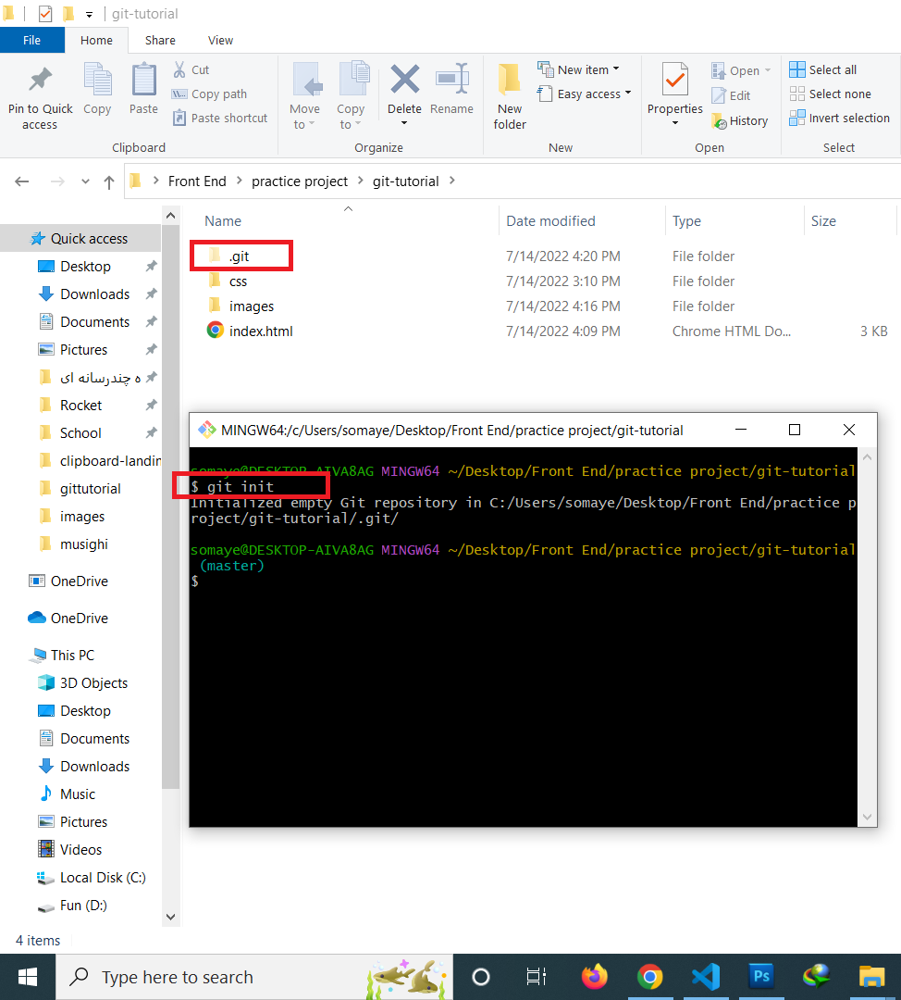
-
دستور
git status
نشون می ده چه فایل هایی تازه به پروژه تون اضافه شده، چه تغییراتی در پروژه ایجاد کردین،
تصویر پایین نشون می ده پوشه های
css،
images،
و فایل
index.html
به تازگی ایجاد شدن و هنوز توسط
git
دنبال نمی شن
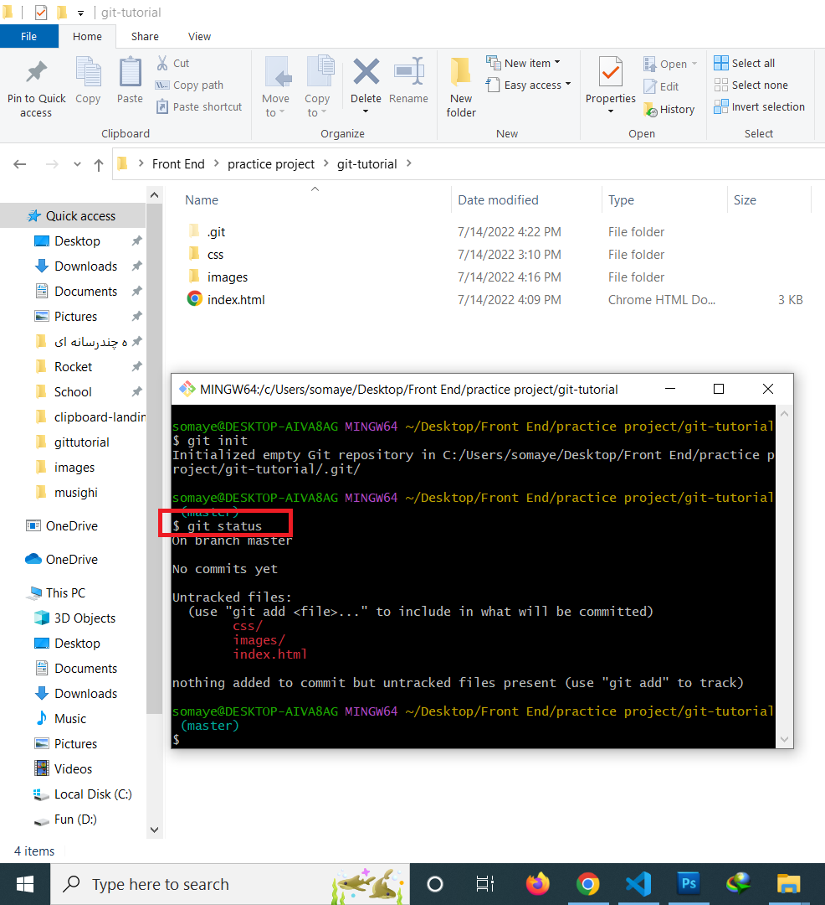
-
دستور
git add .
باعث می شه فایل ها و پوشه ها تحت نظر گیت قرار بگیرن
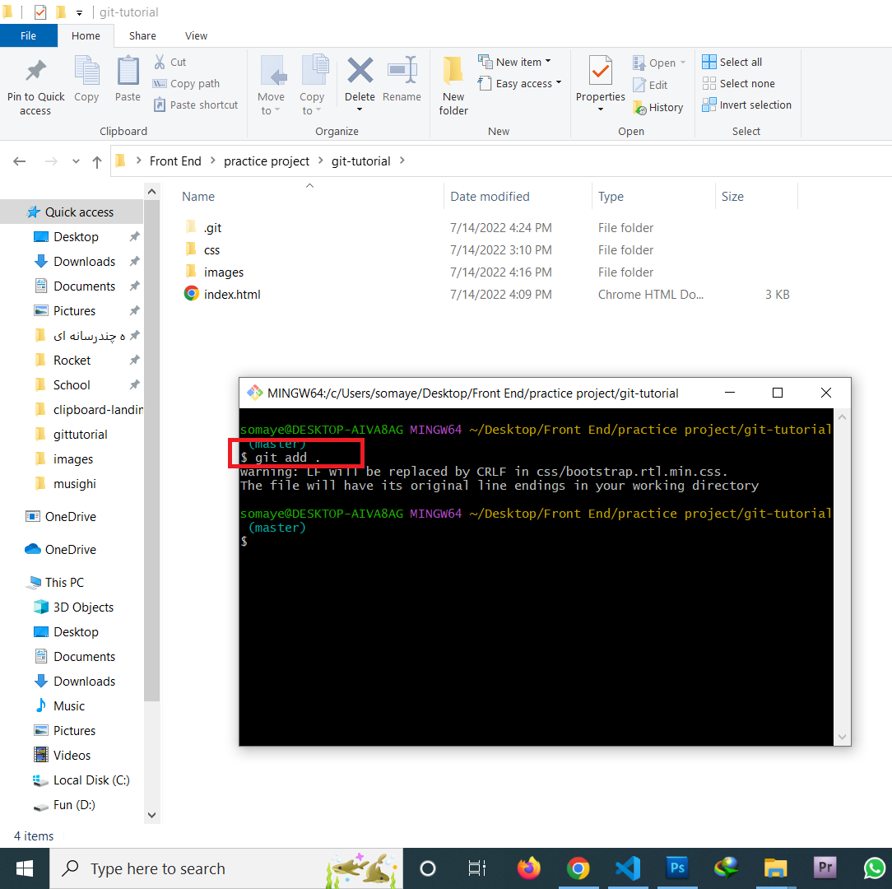
-
حالا اگه
git status
بگیریم با حالت زیر مواجه می شیم
که این یعنی حالا این فایل ها تحت نظر گیت هستند و تغییرات شون توسط گیت دنبال می شه ولی برای نهایی کردن تغییرات هنوز یه مرحله دیگه داریم
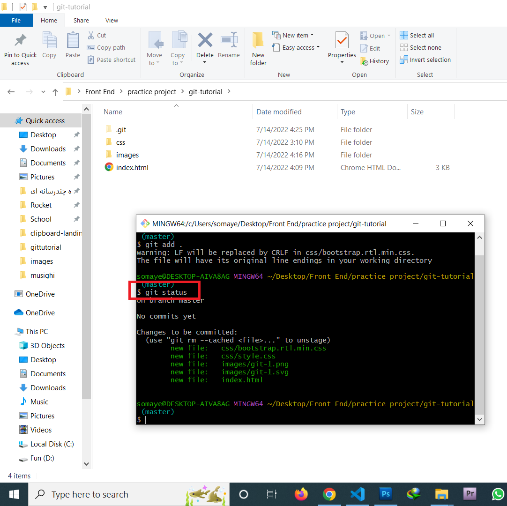
-
با دستور
git commit -m "your message"
تغییرات نهایی ثبت می شن، داخل دابل کوتیشن باید یه توضیح در مورد تغییری که دادین بنویسید تا بعدا تو یادآوری
تغییراتی که تو هر مرحله دادین کمک تون کنه
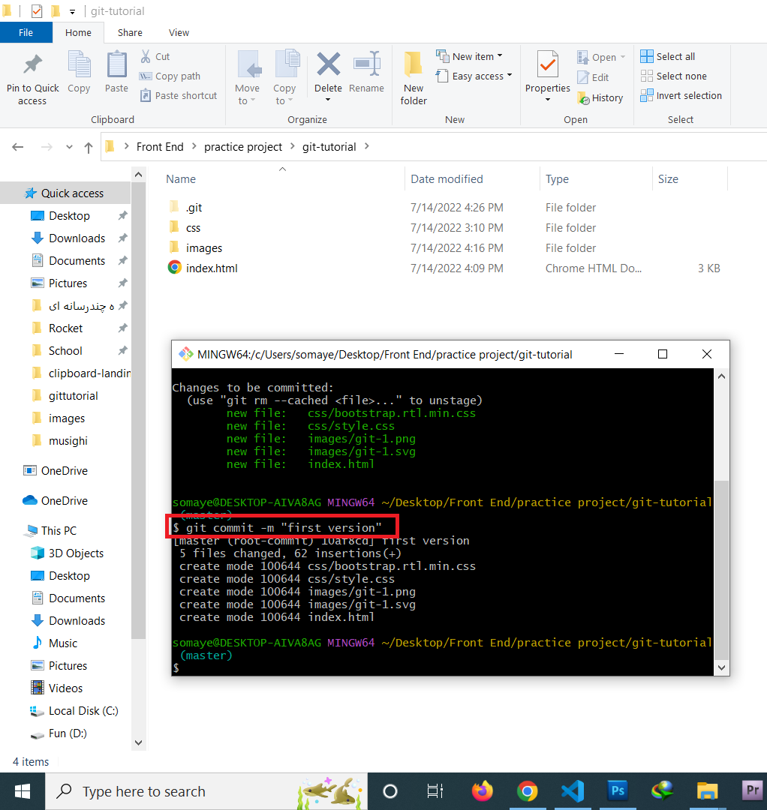
-
حالا اگه
git status
بگیریم، می گه درخت کاری شما خالی شده و چیز جدیدی برای ذخیره و ثبت وجود نداره
یادتون باشه که همیشه اول
git add
و بعد
git commit
رو استفاده می کنیم
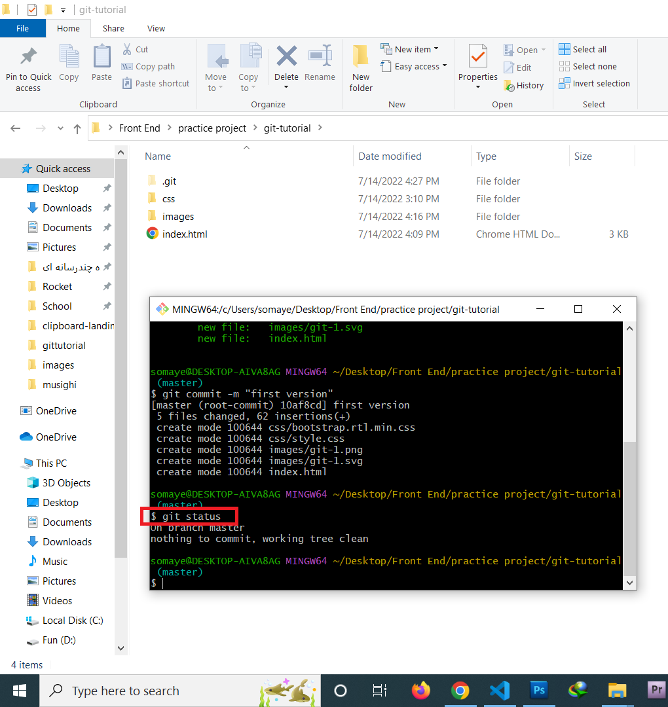
-
با دستور
git log
می تونیم
commit
هایی که انجام دادیم رو ببینیم
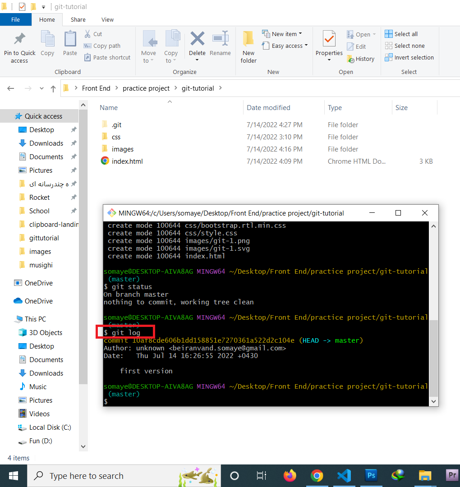
آموزش گیت هاب
- حالا نوبت به ثبت نام تو سایت
گیت هاب
می رسه
برای این کار فقط کافیه یه ایمیل داشته باشید
بعد از کلیک روی لینک بالا ایمیل خودتون رو وارد کنید، در
مرحله بعد یه پسورد بدین
به همین راحتی ثبت نام شما انجام می شه.
-
برای آپلود پروژه ایمیلی که باهاش ثبت نام کردین ازتون خواسته می شه
با این دستور واردش کنید
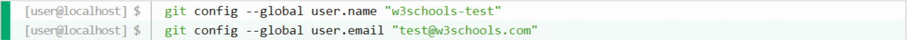
-
وارد اکانت گیت هاب تون بشید
روی علامت بعلاوه کنار عکس پروفایل تون کلیک کنید
گزینه
new repository
رو انتخاب کنید
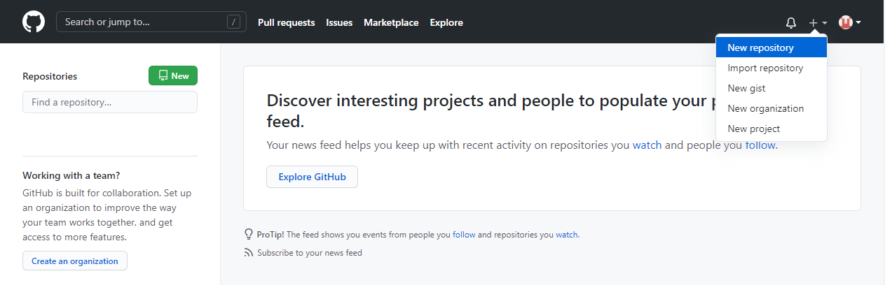
-
یک اسم برای پروژه تون انتخاب کنید و روی گزینه
create repository
بزنید
-
یه صفحه باز می شه با همچین دستوراتی
اونا رو عینا تو خط فرمان گیت که قبلا باهاش کار کردیم وارد کنید
و با این روش پروژتون رو تو گیت هاب push کنید
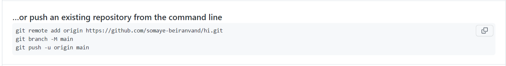
-
تبریک می گم شما موفق شدین پروژتون رو تو گیت هاب آپلود کنید و به پروژتون به این شکل نمایش داده می شه
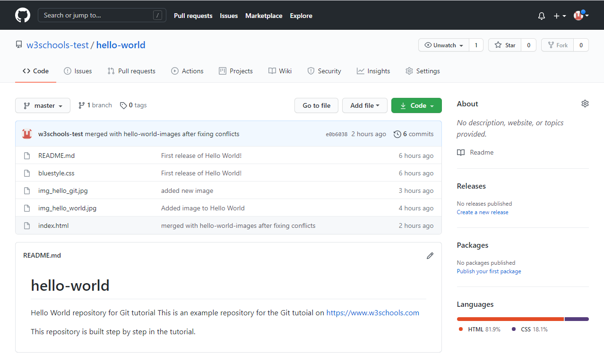